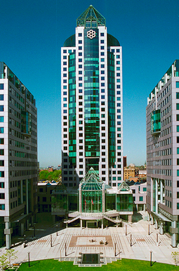

For my first coop, I worked at the City of Toronto, in the
Cybersecurity Division. The formal name is the Office of the CISO,
but I will reference it as the OC in this reflection. This isn't my
first time working here, as last summer I also worked at the OC,
just not for a coop term. I originally only planned to work here for
4 months, but I am now going to complete both my 2024 coop terms
here as I am extending into the fall.
Employer
At the OC, the main goal is to secure the City of Toronto's
applications and networks, and there are many different teams that
support that goal. The team I am working on is called Cyber
Engagement, which generally deals with the "frontend" side of
operations. We interface with other divisions in the city to help
them become or remain more cyber safe. I specifically work on the
Strategic Transformation team, which configures solutions to help
the OC run. During my time here, I have both programmed tools for
many teams in the OC, as well as configured and implemented multiple
solutions from vendors contracted by the OC.

Goals
Over my work term, my main goals were to continue working on
building tools and infrastructure to best support the teams of the
OC. I generally wanted to do the same thing as I did last year, but
also gain more experience working on more complex projects. Here are
some of my main goals:
I wanted to work on a project that tested my knowledge and
experience
Last summer I mainly worked with Jira automation and small tools in
VBA. This summer I wanted to go beyond that and expand my experience
to developing permanent solutions. I did this by leading the
configuration of a tool called Process Unity, to help with our GRC
(Governance, Risk Management, and Complience) pipelines.
I wanted to work with experienced professionals and get a view into
actual project development
Last summer I worked with the client side team of the OC. I helped
them build tools that helped that one team. This summer I wanted to
actually be a part of a project team that made a tool that would
help the whole OC / City. I was able to accomplish this by reaching
out to my supervisors and asking about possible oppertunites I could
be a part of, allowing me to be a part of a project team.
I wanted to lead meetings and be able to convey information to
multiple different groups of people
I generally am someone who is comfortable speaking in meetings about
things that I am confident about. This summer I wanted to lead
workshops and meetings, to gain a better understanding of the topic
and how to best explain it to multiple different groups of people. I
learned that explaining something to one group of people can be
vastly different than explaining that same thing to another group.
It all comes down to their familiarity with the concept, and how you
are able to explain it.
Job Description
My Job Title was a Cyber Security Trainee, but I mainly worked on a
project to implement a solution called Process Unity. As I said
above, it is a GRC tool (Governance, Risk Management, Compliance),
that allows the OC to track Cyber Risks and Threats throughout the
City of Toronto network. I mainly lead the configuration of the
tool, working with the vendor and my team to properly implement
different requirements within the tool. I would also support testing
of the tool and user demos. It really helped that I can pick up on a
technology fast, as it allowed me to properly configure, document,
and demo the tool.
Conclusion
I will be continuing this position into the Fall, and am looking
forward to expanding my knowledge in the Process Unity project, as
well as others that are coming my way. I am really enjoying
exploring cybersecurity and project development as a potential
career path for me. I also worked with 7 other Summer Co-op
Students. Even though I didn't work with them all directly, it was
nice to meet people my age going into the same career as me. The
connections I make along the way will be very useful in my future.